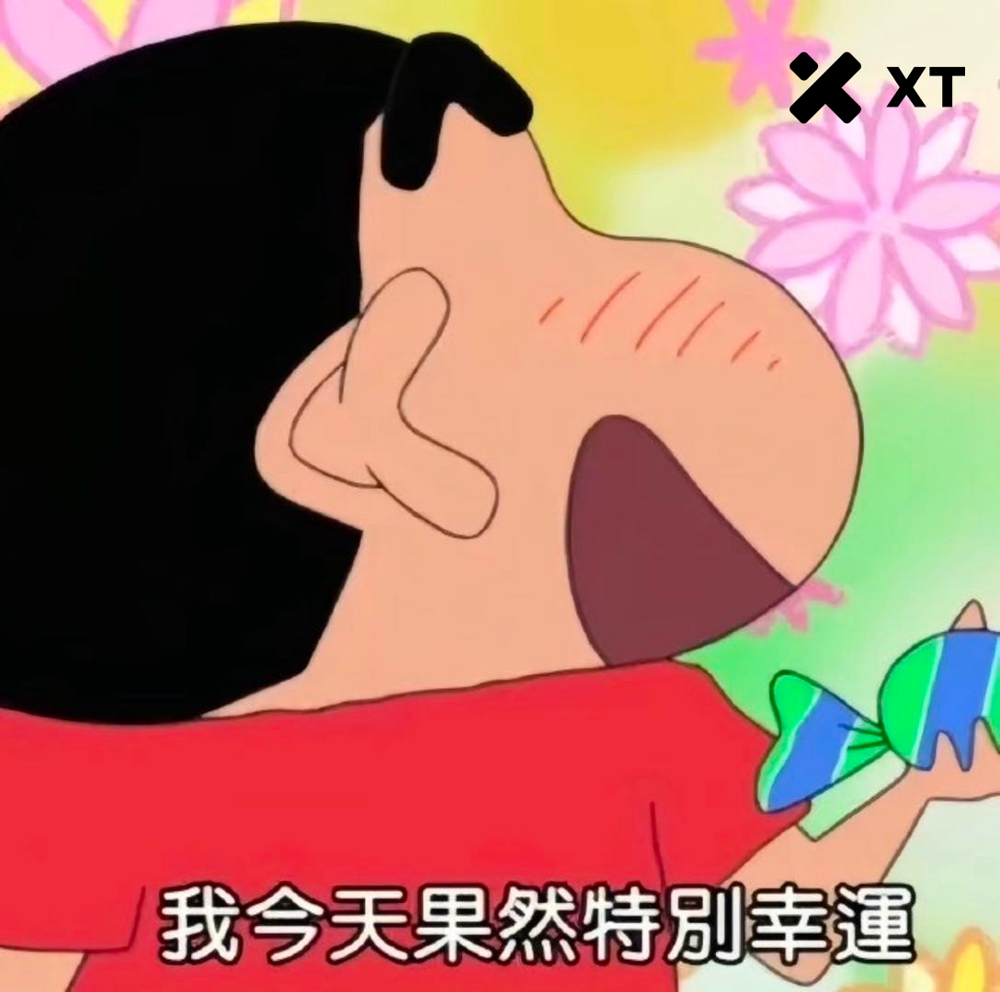

鱼虾一整碗
@wohaokun555
@XTExchangecn 7

XT中文频道
@XTExchangecn
2026 第一個週一
不摸魚，先摸個好運 😎
新年紅包，誰拿走？🧧
1
2
3
4
5
6
7
8
9
10
11
12
13
14
15
16
17
18
19
20
21
22
23
24
25
26
27
28
29
30
31
32
33
34
35
36
37
38
39
40
41
42
43
44
45
46
47
48
49
50
留下你的幸運數字
我們將抽出 10 位幸運用戶派紅包
❤️ 記得按讚 + https://t.co/4HxCWnYBpe